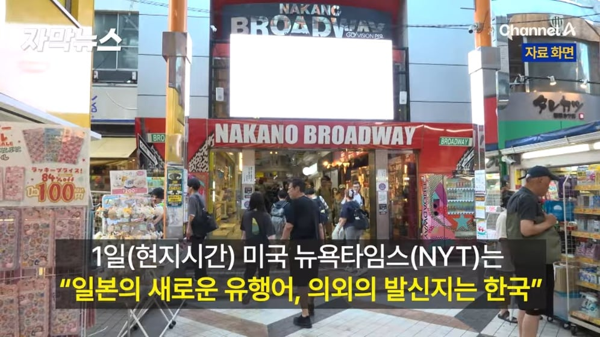
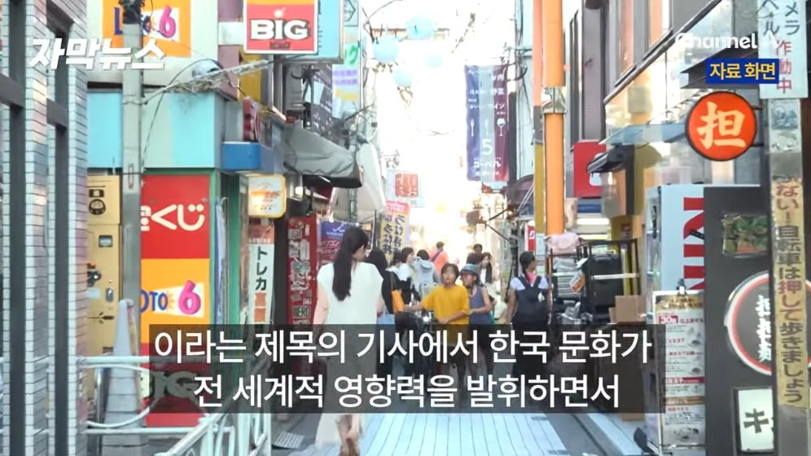
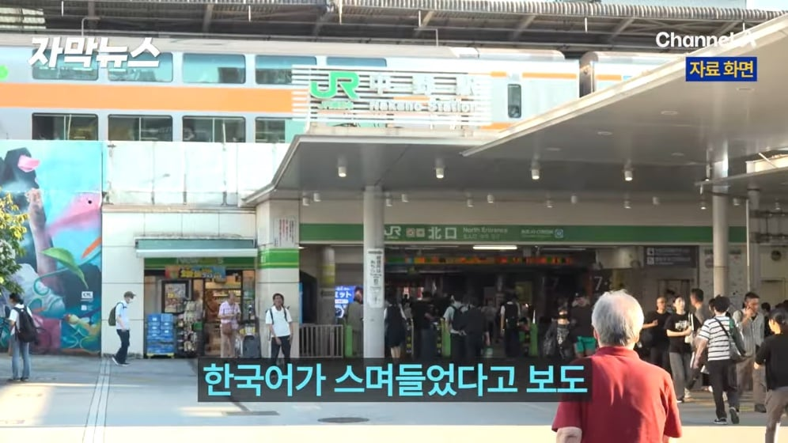
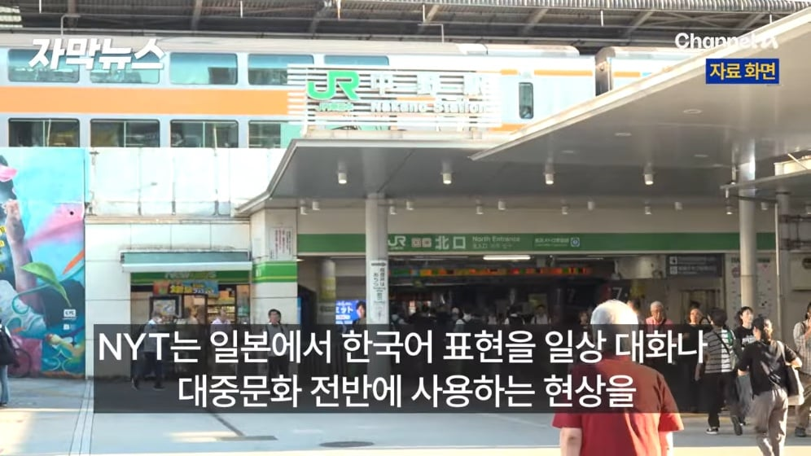
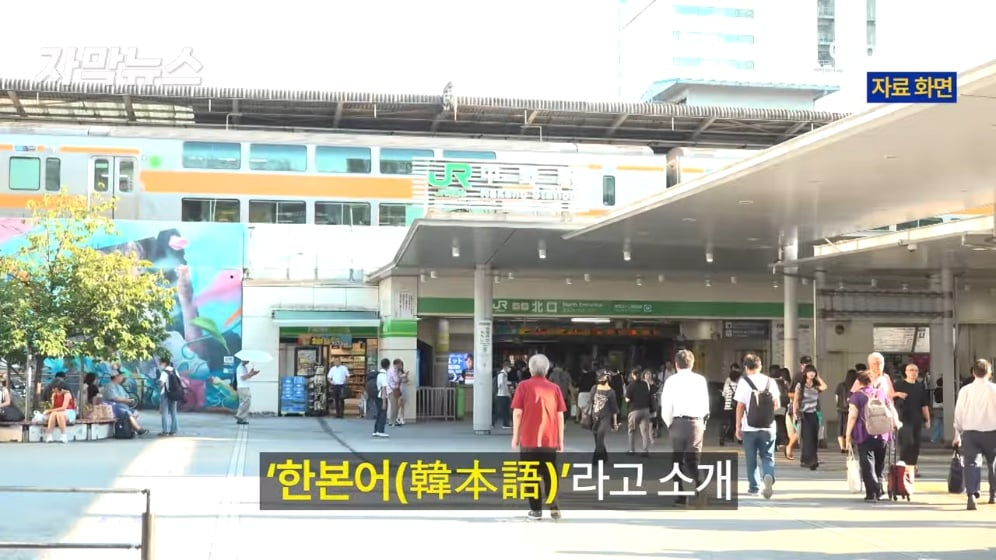
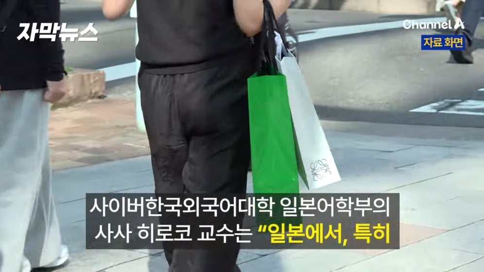
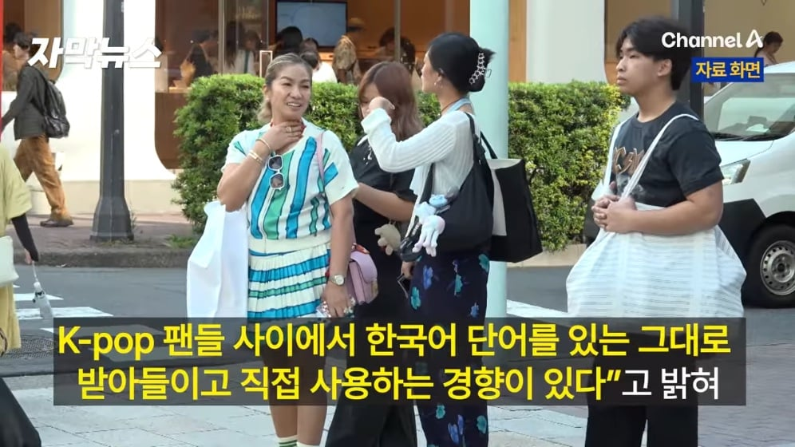
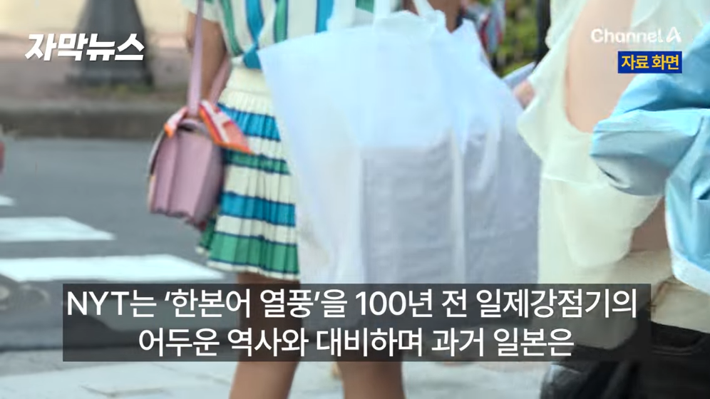
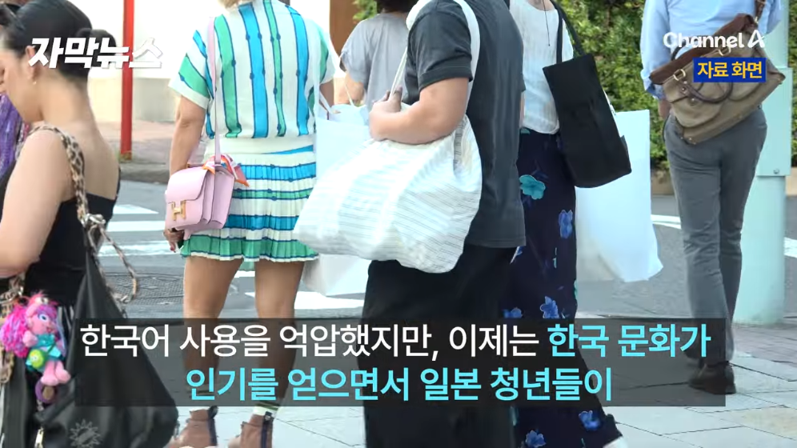
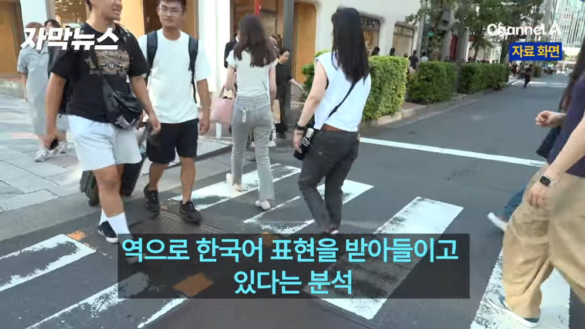

한본어는 재미로 만든 말인 줄 알았는데 뉴욕타임즈가 공식으로 소개함










한본어는 재미로 만든 말인 줄 알았는데 뉴욕타임즈가 공식으로 소개함
지랄시나이데
일본은 근데 외래어를 징짜 마니 섞어쓰긴 하는듯
강유미 노저으라구!
야다... 고로시 함 해줘?
오모시로이한 유행이 있다
엌ㅋㅋㅋ 닝겐노 유리와 튼튼데스네 ㅋㅋㅋㅋ
문화 승리다 이놈들아
서로 막대한 문화적 영향을 주고받긴하는듯 ㅋㅋ
한본어는 우리쪽 명칭일거고 저쪽은 뭐라고 부르냐?
일한어?
지랄시나이데
가라! 강유미!
호라 모 젠젠 멀쩡하잖아?
시바루
아니 한본어는 우리거라고
우리가 더심한데 뭘
그거랑은 결이 좀 다르지
"얘, 정숙인 이번 니찌요지 겟곤 한다는데 아주 스바라시이 헌옷감이만트라."
"어이 기미기미 가께우동 한턱내라."
"이자식아 해부노다."
"나두, 쨍기네-트다."
"얘, 너 곤사이스 에이와지덴 후루온야에가 파러서 젠사이 사먹자."
-1948년 엄홍섭이 거리에서 들었던 말들
나 이거 왜 책에서 본거같지? 무슨 책이었는지는 기억이 안난다
오모시로이한 투수가 있다
도시테 콘나꼬라지니낫탄다요
조또씨발데스